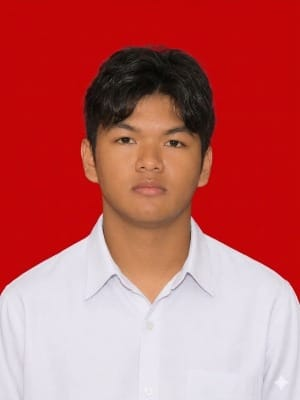

Mahasiswa Ilmu Komputer di Universitas Negeri Medan yang tertarik pada teknologi, komputer, problem solving, dan proses belajar hal-hal baru.
Sedikit cerita tentang diri saya dan ketertarikan yang sedang saya kembangkan.
Saya Samuel Alexander Silalahi, mahasiswa Ilmu Komputer Angkatan 2026 di Universitas Negeri Medan (Unimed).
Saya memiliki ketertarikan pada dunia teknologi dan komputer serta ingin terus mengembangkan kemampuan selama menjalani perkuliahan. Saya juga senang mempelajari hal baru dan mencari cara untuk memecahkan berbagai masalah secara logis.
Perjalanan pendidikan saya hingga menjadi mahasiswa Ilmu Komputer.
Ilmu Komputer • Angkatan 2026
Saya dinyatakan lulus pada program Ilmu Budaya – Sastra Inggris di Universitas Padjadjaran. Namun, karena kendala ekonomi, saya tidak dapat melanjutkan proses registrasi dan akhirnya memilih melanjutkan pendidikan di UNIMED.
Sekolah Menengah Atas
Sekolah Menengah Pertama
Sekolah Dasar
Hal-hal yang ingin saya kembangkan selama perjalanan di bidang Ilmu Komputer.
Tertarik mempelajari komputer, teknologi digital, dan perkembangannya.
Senang mencari solusi dan memahami masalah melalui proses berpikir yang terstruktur.
Memiliki ketertarikan untuk terus belajar dan meningkatkan kemampuan.
Memasak merupakan salah satu kegiatan yang saya sukai. Saya menikmati proses mencoba dan membuat berbagai jenis makanan.
Tempat untuk menampilkan karya yang akan saya buat selama belajar Ilmu Komputer.
Website profil pribadi yang dibuat untuk memperkenalkan diri, pendidikan, minat, dan perjalanan saya sebagai mahasiswa Ilmu Komputer.
Terima kasih sudah mengunjungi website profil saya.
WhatsApp: 0821-6124-1237 ✉